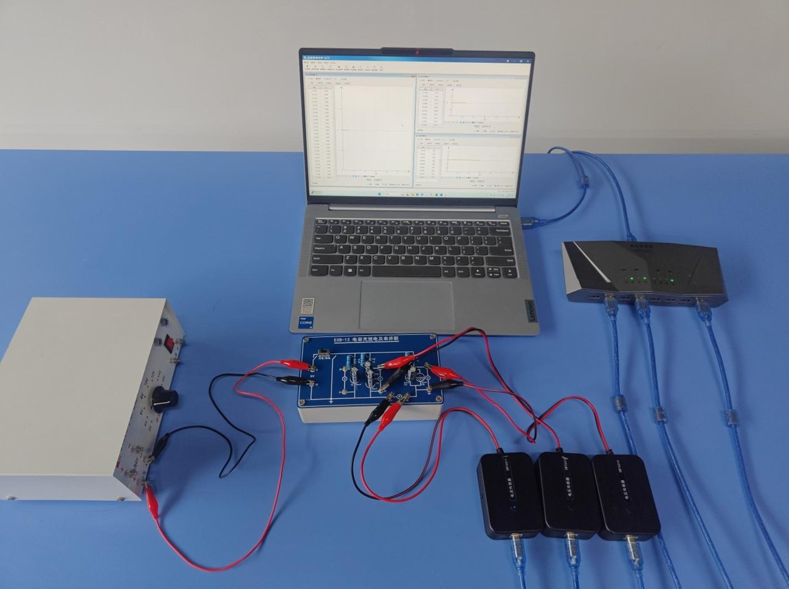
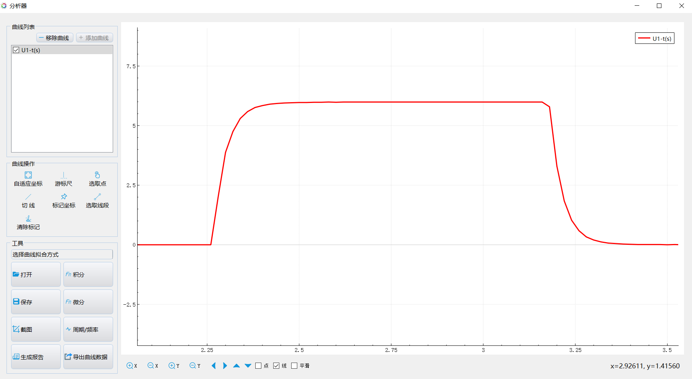
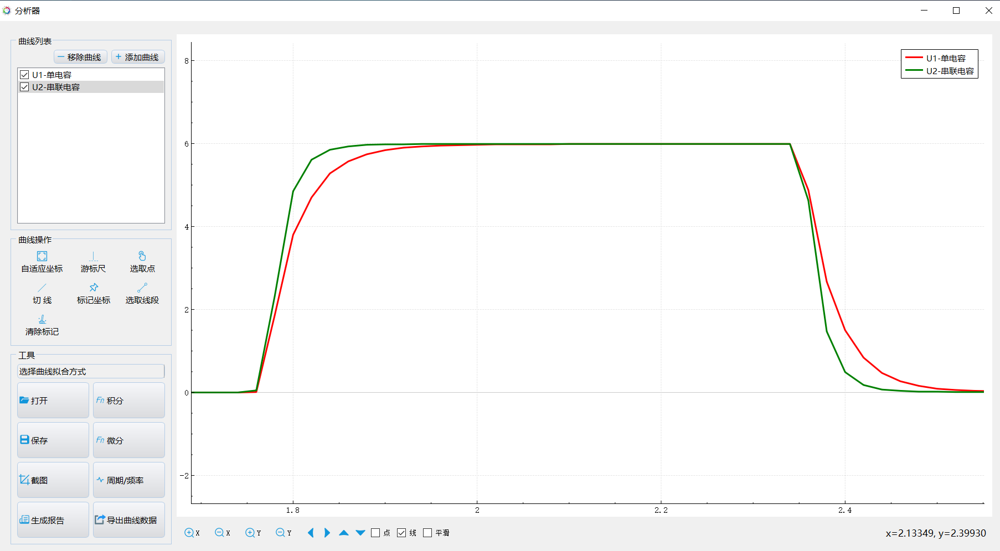
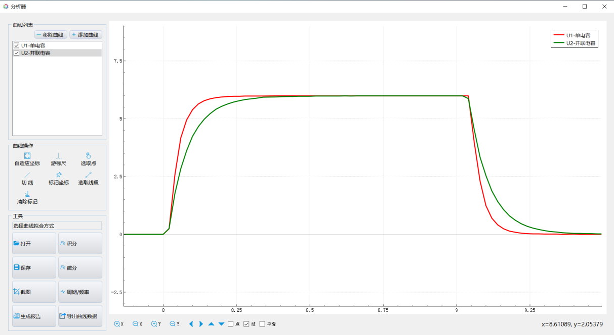

实验二十三 观察电容器的充、放电现象
【实验目的】
观察电容充放电过程，了解电容充放电的容量变化。
【实验原理】
当K1打至“充电”端时，电源正负极与电容器极板连接，使极板带上电荷，对电容充电。在相同电压条件下，电容器的电容越大，充电时间就越长。一段时间后，电容器两端的电压不再变化，表明电容充电完成，此时将K1打至“放电”端，相当于将电容器的极板用导线连接，此时电容器开始放电，两端电压逐渐减小至零，放电完成。同样，在相同电压条件下，电容越大，放电时间越长。将多个电容器并联或串联后总电容会发生变化，可根据充电时间的长短，推断电容串并联后容量的变化。
| 电容器充放电 | 电容器的串联 | 电容器的并联 |
|---|
【实验器材】
数据采集器、2个电压传感器、1个电流传感器、“电容器的充放电和串并联”电学实验板、学生电源和计算机等。
【实验装置】

【实验操作步骤】
1.选择实验板上的“电容器充放电”部分，连接好电路，将电压传感器接入数据采集器，进入实验数据分析软件，将传感器调零，打开表格视图，选择读数频率为50HZ，点击“采集”按钮开始记录数据；
2.将开关K1打到“充电”端，当电压传感器的读数上升趋于稳定后，再把K1打到“放电”，当电压传感器读数变为零时，停止记录数据，点击“数据分析”按钮，选择X轴表示时间，Y轴表示电压，即可得到电容充放电图线；
3.选择实验板上的“电容器串并联”部分，将两个电压传感器接入电路板。把开关K3打到“串联”端，选择电容器串联。点击表格视图的“采集”按钮，开始记录数据，然后将开关K2打到“充电”端，当电压传感器读数上升直至不再变化后，再把K2打到“放电”端，直至电压读数为零时，停止记录数据。做出两个电容器串联和单个电容器的充放电曲线进行比较；
4.将开关K3打到“并联”端，用与上一步类似的方法做出两个电容器并联和单个电容器的充放电曲线进行比较。

单电容充放电过程曲线

单电容充放电过程曲线和串联电容充放电过程曲线

单电容充放电过程曲线和并联电容充放电过程曲线
【注意事项】
外接电源的电压不能大于实验电路板规定的电压，以免损坏实验板和传感器。
【思考与讨论】
1.结合本次实验的结果描述电容器在充、放电过程中电容器两端的电压、电路中的电流以及电容器极板所带的电量的变化情况；
2.根据实验图分析电容器串联和并联后电容的变化情况。